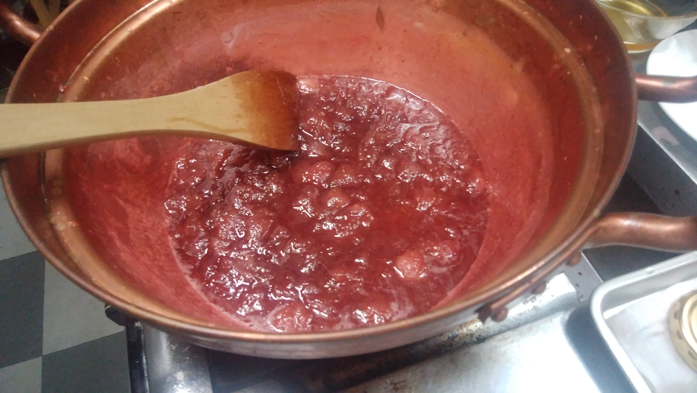
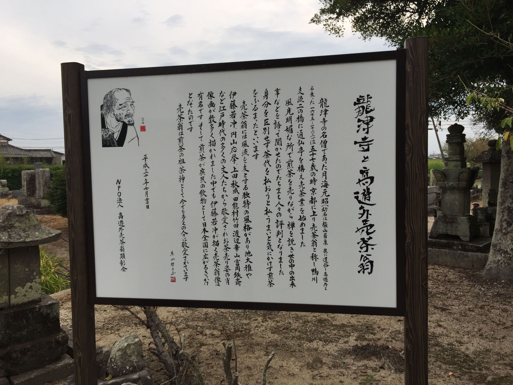

2021/1月 時点：新しい情報については、随時更新予定です

スタジオ・クレエでは、お店の開業を目指している生徒さまが何人かいらっしゃいます。
その中で、2021/07/08(木)にオープン予定の「cafe満天」をご紹介いたします。
江戸時代に煎茶を浸透させた文化人「売茶翁」ゆかりの地で、小さなカフェがオープンします。
自家製ハウスで採れた野菜・イチゴを中心にした、健康で美味しいお食事をお楽しみ下さい。
背振山系を望む眺望の中、静寂で特別なひと時をお過ごしいただけます。
■自家製イチゴ：摘み立てのイチゴで、美味しいジャムを作っています

101度に煮詰めたジャムです
消毒した瓶に詰めていきます
保存のため、逆さにして冷めるまで待ちます
■自家製ハウス：カフェの敷地に隣接してイチゴ・野菜ハウスを併設しています
自家製イチゴ・野菜ハウス
自家製ハウスで取れたイチゴを使用します
沢山実っています
■カフェからの眺望：壮大な背振山系の眺めで、心穏やかな時間が過ごせます
「cafe満天」建設予定地です
建設予定地から、背振山系が望めます
■売茶翁ゆかりの地：日本に煎茶を普及させた文化人、売茶翁(ばいさおう)は龍津寺に出家しました

売茶翁(後に高遊外に改名)の紹介
龍津寺の売茶翁顕彰碑
 素晴らしい虹に出会えるかもです
素晴らしい虹に出会えるかもです